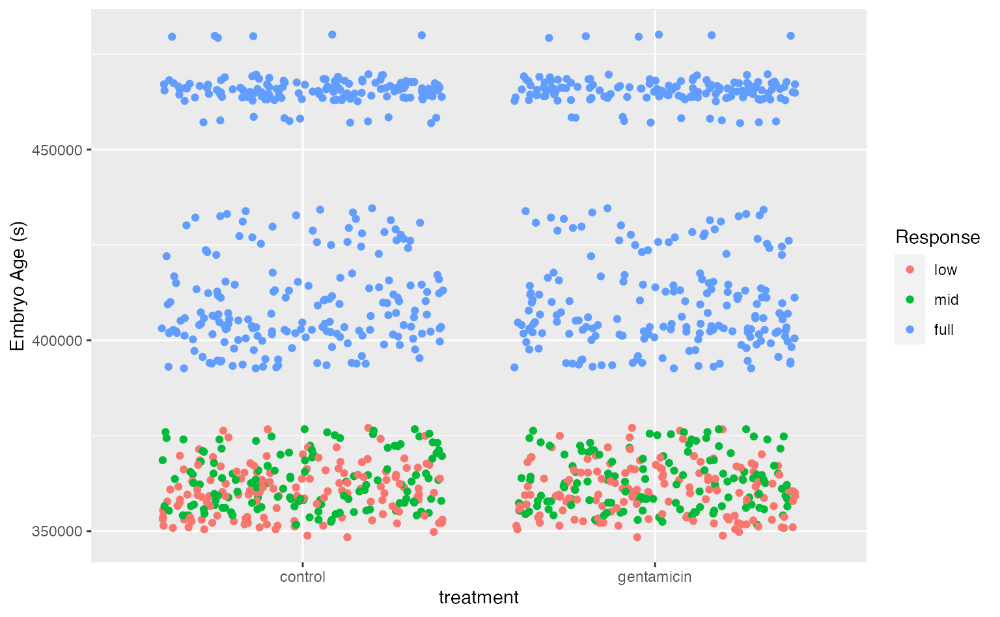
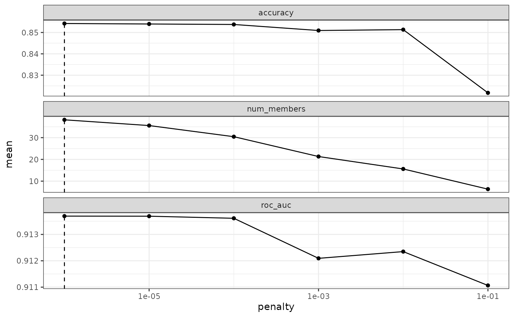
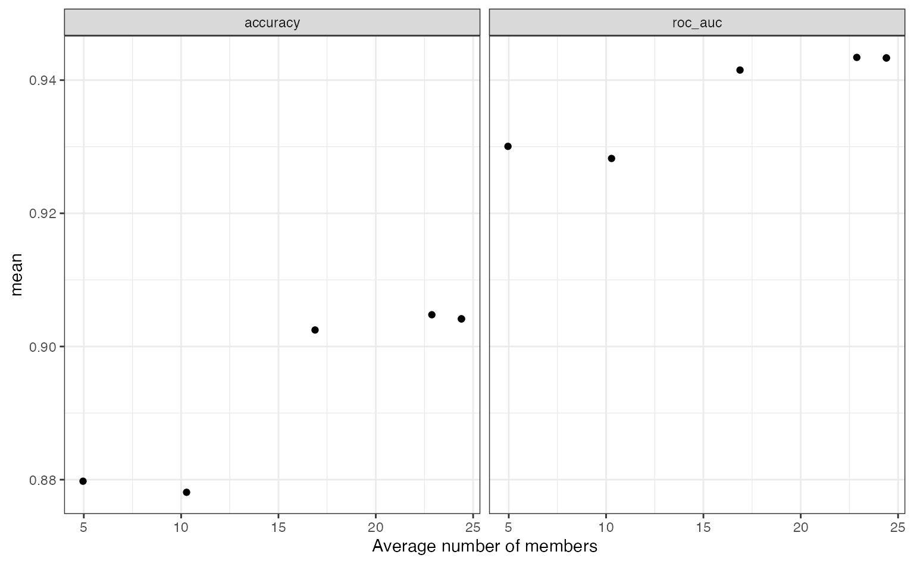
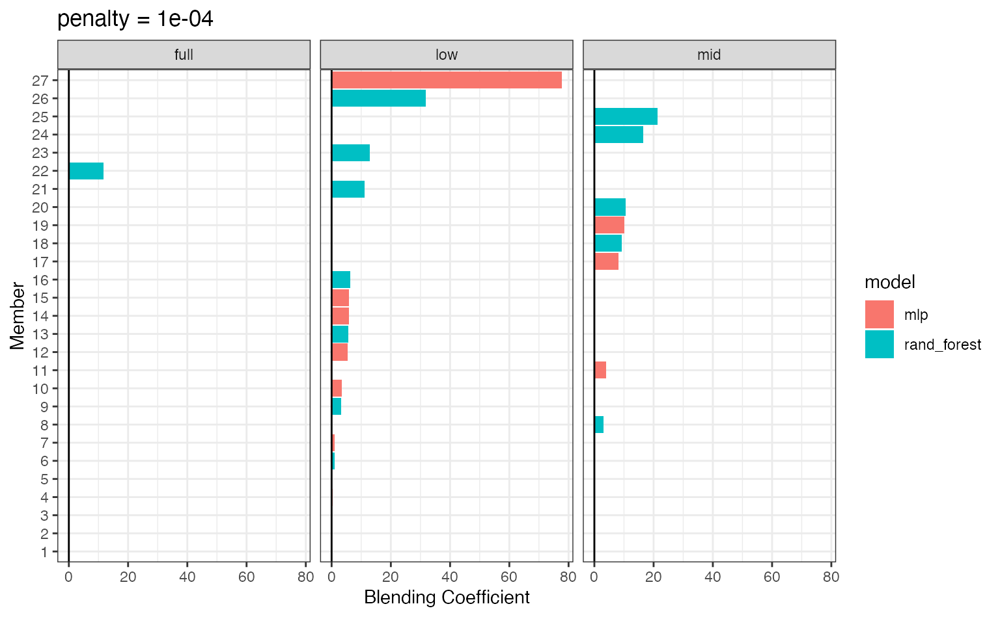

classification.RmdIn this vignette, we’ll tackle a multiclass classification problem using the stacks package. This vignette assumes that you’re familiar with tidymodels “proper,” as well as the basic grammar of the package, and have seen it implemented on numeric data; if this is not the case, check out the “Getting Started With stacks” vignette!
In this example, we’ll make use of the tree_frogs data exported with stacks, giving experimental results on hatching behavior of red-eyed tree frog embryos!
Red-eyed tree frog (RETF) embryos can hatch earlier than their normal 7ish days if they detect potential predator threat. Researchers wanted to determine how, and when, these tree frog embryos were able to detect stimulus from their environment. To do so, they subjected the embryos at varying developmental stages to “predator stimulus” by jiggling the embryos with a blunt probe. Beforehand, though some of the embryos were treated with gentamicin, a compound that knocks out their lateral line (a sensory organ.) Researcher Julie Jung and her crew found that these factors inform whether an embryo hatches prematurely or not!
In this article, we’ll use most all of the variables in tree_frogs to predict reflex, a measure of ear function called the vestibulo-ocular reflex, categorized into bins. Ear function increases from factor levels “low”, to “mid”, to “full”.
Let’s plot the data to get a sense for how separable these groups are.
library(ggplot2) ggplot(tree_frogs) + aes(x = treatment, y = age, color = reflex) + geom_jitter() + labs(y = "Embryo Age (s)", x = "treatment", color = "Response")

It looks like the embryo age is pretty effective at picking out embryos with full VOR function, but the problem gets tougher for the less developed embryos! Let’s see how well the stacked ensemble can classify these tree frogs.
As in the numeric prediction setting, defining the candidate ensemble members is undoubtedly the longest part of the ensembling process with stacks. First, splitting up the training data, generating resamples, and setting some options that will be used by each model definition.
# some setup: resampling and a basic recipe set.seed(1) tree_frogs_split <- initial_split(tree_frogs) tree_frogs_train <- training(tree_frogs_split) tree_frogs_test <- testing(tree_frogs_split) folds <- rsample::vfold_cv(tree_frogs_train, v = 5) tree_frogs_rec <- recipe(reflex ~ ., data = tree_frogs_train) %>% step_dummy(all_nominal(), -reflex) %>% step_zv(all_predictors()) tree_frogs_wflow <- workflow() %>% add_recipe(tree_frogs_rec)
We also need to use the same control settings as in the numeric response setting:
ctrl_grid <- control_stack_grid()
We’ll define two different model definitions to try to predict reflex—a random forest and a neural network.
Starting out with a random forest:
rand_forest_spec <- rand_forest( mtry = tune(), min_n = tune(), trees = 500 ) %>% set_mode("classification") %>% set_engine("ranger") rand_forest_wflow <- tree_frogs_wflow %>% add_model(rand_forest_spec) rand_forest_res <- tune_grid( object = rand_forest_wflow, resamples = folds, grid = 10, control = ctrl_grid )
Now, moving on to the neural network model definition:
nnet_spec <- mlp(hidden_units = tune(), penalty = tune(), epochs = tune()) %>% set_mode("classification") %>% set_engine("nnet") nnet_rec <- tree_frogs_rec %>% step_normalize(all_predictors()) nnet_wflow <- tree_frogs_wflow %>% add_model(nnet_spec) nnet_res <- tune_grid( object = nnet_wflow, resamples = folds, grid = 10, control = ctrl_grid )
With these model definitions fully specified, we’re ready to start putting together an ensemble!
Building the stacked ensemble, now, only takes a few lines:
tree_frogs_model_st <- # initialize the stack stacks() %>% # add candidate members add_candidates(rand_forest_res) %>% add_candidates(nnet_res) %>% # determine how to combine their predictions blend_predictions() %>% # fit the candidates with nonzero stacking coefficients fit_members() tree_frogs_model_st #> # A tibble: 9 x 4 #> member type weight class #> <chr> <chr> <dbl> <chr> #> 1 .pred_full_rand_forest_res09 rand_forest 6.88 full #> 2 .pred_mid_rand_forest_res02 rand_forest 3.46 mid #> 3 .pred_full_rand_forest_res06 rand_forest 0.989 full #> 4 .pred_full_rand_forest_res04 rand_forest 0.709 full #> 5 .pred_full_rand_forest_res01 rand_forest 0.120 full #> 6 .pred_mid_nnet_res07 mlp 0.0805 low #> 7 .pred_full_rand_forest_res08 rand_forest 0.0675 full #> 8 .pred_mid_rand_forest_res04 rand_forest 0.0481 mid #> 9 .pred_full_rand_forest_res02 rand_forest 0.0168 full
To make sure that we have the right trade-off between minimizing the number of members and optimizing performance, the autoplot() method comes in hand:

To show the relationship more directly:
autoplot(tree_frogs_model_st, type = "members")

If these results were not good enough, blend_predictions() could be called again with different values of penalty. As it is, blend_predictions() picks the penalty parameter with the numerically optimal results. To see the top results:
autoplot(tree_frogs_model_st, type = "weights")

There are multiple facets since the ensemble members can have different effects on different classes.
This object is now ready to predict with new data!
Computing the ROC AUC for the model:
Looks like our predictions were pretty strong! How do the stacks predictions perform, though, as compared to the members’ predictions? We can use the members argument to generate predictions from each of the ensemble members.
tree_frogs_pred <- tree_frogs_test %>% select(reflex) %>% bind_cols( predict( tree_frogs_model_st, tree_frogs_test, type = "class", members = TRUE ) ) tree_frogs_pred #> # A tibble: 303 x 18 #> reflex .pred_class .pred_class_ran… .pred_class_ran… .pred_class_ran… #> <fct> <fct> <fct> <fct> <fct> #> 1 full low full full full #> 2 low mid low low low #> 3 full low full full full #> 4 low mid low low low #> 5 full low full full full #> 6 full low full full full #> 7 mid mid low mid low #> 8 mid full low mid mid #> 9 low full mid mid mid #> 10 full low full full full #> # … with 293 more rows, and 13 more variables: .pred_class_nnet_res08 <fct>, #> # .pred_class_nnet_res07 <fct>, .pred_class_nnet_res09 <fct>, #> # .pred_class_nnet_res10 <fct>, .pred_class_nnet_res06 <fct>, #> # .pred_class_nnet_res02 <fct>, .pred_class_nnet_res01 <fct>, #> # .pred_class_rand_forest_res04 <fct>, .pred_class_rand_forest_res01 <fct>, #> # .pred_class_rand_forest_res02 <fct>, .pred_class_nnet_res03 <fct>, #> # .pred_class_rand_forest_res09 <fct>, .pred_class_rand_forest_res08 <fct> map_dfr( setNames(colnames(tree_frogs_pred), colnames(tree_frogs_pred)), ~mean(tree_frogs_pred$reflex == pull(tree_frogs_pred, .x)) ) %>% pivot_longer(c(everything(), -reflex)) #> # A tibble: 17 x 3 #> reflex name value #> <dbl> <chr> <dbl> #> 1 1 .pred_class 0.0495 #> 2 1 .pred_class_rand_forest_res03 0.785 #> 3 1 .pred_class_rand_forest_res06 0.868 #> 4 1 .pred_class_rand_forest_res10 0.845 #> 5 1 .pred_class_nnet_res08 0.518 #> 6 1 .pred_class_nnet_res07 0.518 #> 7 1 .pred_class_nnet_res09 0.518 #> 8 1 .pred_class_nnet_res10 0.518 #> 9 1 .pred_class_nnet_res06 0.518 #> 10 1 .pred_class_nnet_res02 0.518 #> 11 1 .pred_class_nnet_res01 0.518 #> 12 1 .pred_class_rand_forest_res04 0.838 #> 13 1 .pred_class_rand_forest_res01 0.838 #> 14 1 .pred_class_rand_forest_res02 0.868 #> 15 1 .pred_class_nnet_res03 0.518 #> 16 1 .pred_class_rand_forest_res09 0.842 #> 17 1 .pred_class_rand_forest_res08 0.845
Voila! You’ve now made use of the stacks package to predict tree frog embryo ear function using a stacked ensemble!